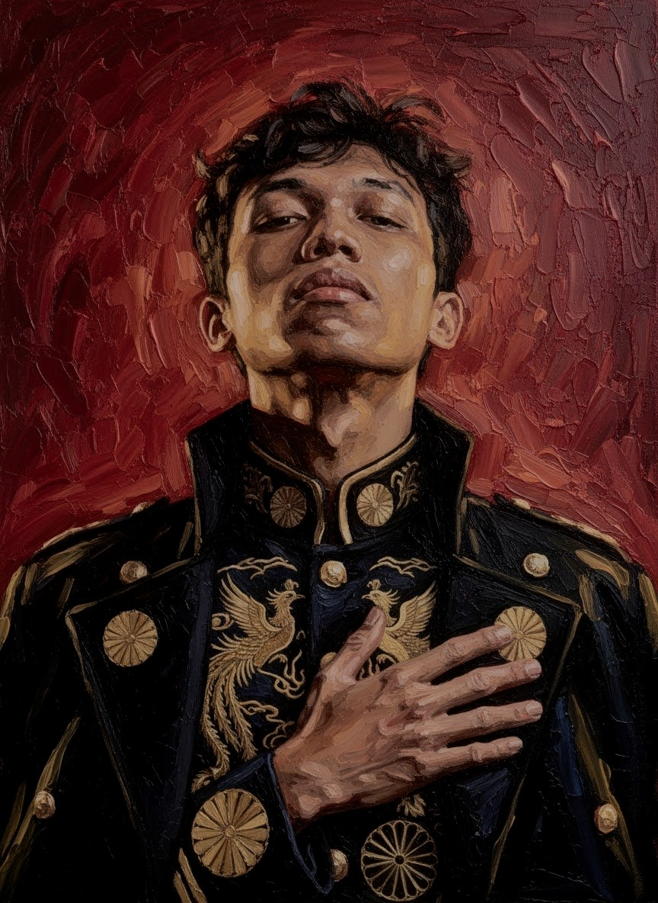

Analisis & Riset
Berpikir terstruktur, menggali informasi, dan mengenali pola dari data.
SELAMAT DATANG DI PORTOFOLIO SAYA
Web & Data Enthusiast
Saya senang mengeksplorasi teknologi, memahami data, dan mengubah ide menjadi sesuatu yang bisa digunakan.
01 / KENALI SAYA

SEDIKIT CERITA
Saya tertarik pada analisis dan riset, pemrograman web, networking, serta cara teknologi membantu menyelesaikan masalah sehari-hari.
Portofolio ini adalah tempat saya membagikan apa yang sedang dipelajari dan dibangun — dari eksperimen data sampai proyek digital sederhana.
“Hanya laki-laki yang memiliki banyak kelemahan dan terus berusaha memperbaiki diri.”Lihat CV saya
02 / APA YANG SAYA PELAJARI
Beberapa bidang yang saya eksplorasi dan terus saya kembangkan.
Berpikir terstruktur, menggali informasi, dan mengenali pola dari data.
Mempelajari dasar pengembangan web dan berbagai keterampilan teknis.
03 / HASIL EKSPLORASI
Eksperimen kecil yang menjadi bagian dari perjalanan belajar saya.
Simulasi prediksi jumlah siswa baru berdasarkan data tiga tahun. Model contoh ini menggunakan rata-rata perubahan tahunan untuk memperkirakan tahun keempat.
Masukkan jumlah siswa untuk tiga tahun berurutan.
— siswa
Hasil akan muncul setelah dihitung.* Ini simulasi tren sederhana, bukan model prediksi produksi.
04 / MARI BERBICARA
Terbuka untuk diskusi, berbagi wawasan, atau sekadar menyapa.
ixanxnax299@gmail.com